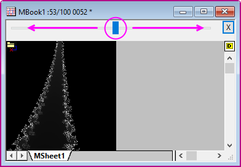
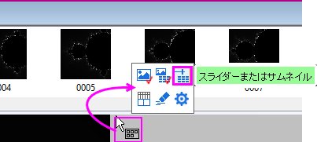
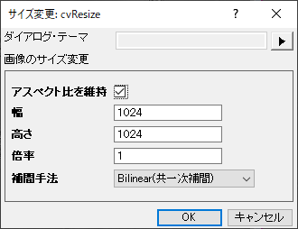

行列ブック、行列シート、行列オブジェクト
行列ブック、行列シート、行列オブジェクト
行列ブック、行列シート、行列オブジェクト
行列は、XとYの値が線形にマッピングされた列と行により構成される、Z値の表形式データです。
限度, 行列以下は行列ブックの制限についてのサマリーです。
| 最大数
|
32Bit OS
|
64Bit OS
|
|
行列ブック内の行列シート
行列シート内の行列オブジェクト
行列のセル (Note)
|
1024†
65,527
90,000,000
|
1024†
65,527
90,000,000
|
255シート以上の場合、Unicodeファイル形式 (例 *.opju) で保存する必要があります。Unicode対応のファイルは、Origin 2018 SR0より前のバージョンのOriginでは開けません。
| Note: 行と列の組み合わせの積が90,000,000よりも小さい必要があります。
|
行列ブック、行列シート、行列オブジェクトの名前
行列ブックの名前
行列ブック、名前
行列シート、名前
行列シートの名前
行列オブジェクト、名前
行列オブジェクトの名前

| 行列ブック
|
- 行列ブックには、表示されているかどうかに関わらず、ショートネームが設定されます。Origin内部のオペレーションにはショートネームが使用されます。
- ショートネームは、プロジェクト内で固有で、スペースや特殊文字を含まず、アルファベットの文字(A-Z, 0-9)で始まる最大13文字まで、と制限されています。小文字を使用すると表示できますが、内部では大文字と小文字は区別されません。(そのため、行列のショートネームとしてMBOOK1 と mbook1 の両方を作成できません)
- ロングネームは、必須ではありません。プロジェクトで固有である必要はなく、スペースや特殊文字を含めることができ、始まりの文字に対する制限はありません。入力可能な文字数は、最大520以下（半角、スペースを含む）になります。
|
| 行列シート
|
- シートの名前は、行列ブック内で固有で32文字に制限されます。
- スペースと数字を含めることができます。
- `!%"|()[]{}<>を除く特殊文字を含めることができます。
- 文字、数値、利用可能な特殊文字を先頭にすることができます。
- オプションで、ラベル やコメントを追加できます。
|
| 行列オブジェクト
|
- デフォルトでは、行列オブジェクトが作成されると、Originはそれぞれに対し、行列オブジェクトのインデックス番号を名前として設定します。このインデックス番号を変更することはできません。
- 行列シートの右上にある黄色のアイコン（データ用アイコン、イメージ用アイコン）をクリックし、名前の変更を選択すると、行列オブジェクトに対して任意の名称を設定可能です。または、サムネイルの下の行列オブジェクトの番号/名前をダブルクリックして、名前を入力することもできます。
|
行列データのさまざまな表示方法
行列, データモード対イメージモード 関心範囲（ROI）イメージ、行列ワークシートでは、データセットは1つの列に含まれ、一つの列がXデータ、Yデータ、Zデータ、エラー、ラベルデータとして構成されます。Originの行列では、データセットは行と列の指定された次元に配置されます。そして、行列には1つのZ値のデータセットが含まれます。
- 行列の列はXデータを線形間隔でマッピングします。
- 行列の行はYデータを線形間隔でマッピングします。
行列ウィンドウには、行と列の表示モードが2通りあります。
- デフォルトで、行列の行と列のヘッダは、行と列のインデックス番号 で表示します。( 表示：行/列を表示 または、Ctrl+Shift+Cを押す)
- この表示設定は、メインメニューの表示：X/Yを表示（またはCtrl+Shift+X）を選択して、行と列に対するXとYの値を表示するように変更可能です。表示されたXとYの値は、それぞれの開始と終了の値と、列や行の数の線形補間により算出されます。
行と列に対する2つの表示モードに加え、2つの行列データの表示モードがあります。
- データモード（表示：データモードあるいはCtrl+Shift+Dを押す）では、行列オブジェクトは値として表示します。
- イメージモード（表示：イメージモードあるいはCtrl+Shift+Iを押す）では、行列のデータタイプにより、行列オブジェクトはグレースケールまたはカラーの画像を表示します。RGB値はカラー画像をとして表示されますが、実数または複素数の行列はグレースケールとして表示されます。
| Note：行列オブジェクトが画像の場合、表示モードとしてイメージモード（表示：イメージモード）またはデータモード（表示：データモード）のどちらに設定していても、オブジェクトアイコンはのように表示されます。同様に、数値データを行列にインポートすると、表示モードに関係なく、オブジェクトアイコンはのように表示されます。
|
行列ブック
行列オブジェクトワークブックと同様、行列ブックもカスタム可能なテンプレート（.otmuファイル）から作成されています。行列テンプレートには、行列ブック内のシートの数、行列シートの名前、次数、データ型、数学関数、インポート方法、表示属性や表示フォーマットなどの設定項目を保存されています。
新しく行列ブックを作成すると、ブックはMBookN（N：ウィンドウの作成順）と命名されます。ブック名とともに、":1/3"のように表示されますが、最初の数字は、アクティブな行列オブジェクトを意味し、2番目の数字は、アクティブな行列ブックが持つオブジェクト数を意味しています。上記の例に従って、行列の右側にある黄色のオブジェクトアイコンをクリックすると、メニューに3つの行列オブジェクトが表示されます。最初にあるチェックマークが付いているオブジェクトがアクティブなオブジェクトです（下図の場合、数値は入力されていません）。
 | ワークシートのタブを右クリックしてシートとして行列を追加をクリックし、行列ブックをワークブックに挿入することができます。これは、3D曲面フィットや3Dプロット操作などの行列ベースの操作を含む分析テンプレートを作成するときに役立ちます。
|
行列シート
| Origin2018より前のバージョンでは、255シートまでしか行列ブックに含めることができませんでした。現在は、1024シートまで増えました。行列ブック内に255シート以上ある場合、Unicode形式のファイル(opju, ogmu, etc)で保存する必要があります。
|
行列ブックは、最大1024個の行列シートを含めることができます。デフォルトのOriginテンプレート（ORIGIN.otmu）は、32行 32列の行列シート1つを持ちます。それぞれの行列シートの次数（行と列の数、およびXとYの範囲）は変更可能です。
行列シートの次数を変更する方法
- タブをクリックしてシートをアクティブにし、行列: 次数/ラベルの設定を選択します。これにより、行列次数/ラベルの設定ダイアログボックスが開きます。
- テキストボックスに、行数(X)と列数(Y)を入力します。
- さらに、X（列）とY（行）の開始と終了の値を設定します。
| Note：行列データのXとY座標は、等間隔であると見なされます。最初のXは行列の最初の列に、最後のXは行列の最後の列にマッピングされます。それ以外の列のX座標は線形にマッピングされます。行に対しても同様にマッピングされ、開始と終了のYが使われます。行列のセルに対応するポイントに対して、3D空間の位置は、セルに保存されたZ値だけでなく、このセルのXとY座標によって決められます。そのため、行列データがプロットまたは分析されると、行および列の番号ではなく、XY座標が使われます。
|
行列オブジェクト
行列シートには最大65,504の行列オブジェクトを含めることができます。実際の制限はシステムリソースで決まるので、それより小さいと考えられます。ひとつのシート内のオブジェクトは、同じ列（X）/行（Y）の次数とヘッダを持ちますが、各オブジェクトはそれぞれのZヘッダを持ちます。その他の行列オブジェクトのプロパティは、内部データ型および数値の表示オプションを含みます。
行列オブジェクトのプロパティは、ユーザ・インターフェースである、行列プロパティダイアログボックスで設定します。ダイアログボックスを開くには
- 行列オブジェクトをアクティブにします。（オブジェクトメニューの中にチェックマークが表示されます。）
- メニューから行列：セル属性の設定を選択します。
| ダイアログボックス上部に配置された<<戻る、進む>>ボタンを使用すれば、複数の行列オブジェクトそれぞれに設定を行う際、毎回ダイアログを閉じずに編集できます。
|
行列に画像をインポート
Originには、マルチフレーム画像をインポートするための2つの構造があります。行列ウィンドウとイメージウィンドウです。行列ウィンドウは、データ分析タスク（曲面フィッティング、統計、データの数学変換など）や一部のグラフ化操作の実行に適していますが、次の点に注意が必要です。
- 画像を行列にインポートした場合、他の行列データと同様に、「データモード」（表示：データモード）と「イメージモード」（表示：イメージモード）を切り替えることができます。
- ただし、以下のシーケンスの2番目のウィンドウに示されているように、データに変換されない限り、行列にはRGB値が含まれます（表示モードに関係なく）。
- 特定の分析または作図操作（非線形行列フィットやイメージプロットの作成など）を実行するには、あらかじめ、イメージ：変換：データに変換を選択して、行列をZ値に変換する必要があります。

詳細は、Originヘルプファイルの画像変換を参照してください。
画像または画像のスタックを行列ウィンドウにインポートする方法
- 行列ウィンドウをアクティブにして、データ：ファイルからインポート：イメージファイルを行列へインポートを選択します。
- イメージファイルを行列へインポート(impImage)ダイアログが開きます。グレースケールGeoTIFFをデータとしてインポートする、イメージサムネイルを表示するなど、複数ファイルのインポート処理を行うためのコントロールを利用できます。
イメージサムネイルとスライダ
| マルチフレームのTIFファイルをインポートする場合、サムネイル/スライダの表示はシステム変数@MSS（デフォルト値= 10）によって制御されます。
- シートに1つのフレームしかない場合は、サムネイル/スライダーを表示しません。
- 1 < フレーム数 < 10の場合、サムネイルを表示します
- フレームが10を超える場合は、スライダーを表示します
|
シートに複数のオブジェクトが含まれている場合、行列ウィンドウの上部にあるスペースに一連のサムネイルとしてそれらのオブジェクトを表示できます。
- 行列ウィンドウのタイトルバーを右クリックして、イメージサムネイルの表示を選び、有効にします。

または、スライダコントロールを使用して、アクティブな行列シートでこれらのオブジェクトを表示することもできます。
- 
ウィンドウ上部のスペースにサムネイル画像が表示されている場合は、次の手順でスライダに切り替えることができます。
- サムネイル間のスペースにカーソルを合わせ、カーソルがグリッドアイコン
 に変わったら、クリックしてミニツールバーのページを表示します（行列画像の右側の灰色の領域をクリックすることもできます）。
に変わったら、クリックしてミニツールバーのページを表示します（行列画像の右側の灰色の領域をクリックすることもできます）。
- スライダまたはサムネイルを切り替えて、スライダまたはサムネイルを表示します。
- 
- 同様に、イメージセレクタボタンをクリックすると、サムネイルとスライダの両方をオフにできますイメージを表示ボタンをクリックして、データモードとイメージモードを切り替えます。
行列オブジェクトの名前付け
行列オブジェクトに名前付け可能です。
- 行列をアクティブにして、データ：名前の定義を選択します。
- 行列の名前を入力し、任意でスコープを設定して、コメントを追加します。
行列：セル値の設定で開くダイアログで名前付き範囲を使用できます（たとえば、同じ次元の他の行列オブジェクトに対して数学演算を実行するなど）。
行列にGeoTIFFをインポート
GeoTIFFは、空間情報をTIFFファイルに保存し、マッピングに適用できるパブリックドメインの画像形式です。OriginはGeoTIFFファイルを行列およびイメージウィンドウの両方へのインポートできます。
GeoTIFFファイルをアクティブな行列にインポート
- データ: ファイルからインポート: イメージファイルを行列へインポートをクリックします。
- イメージダイアログ(impImage),で、グレースケールGeoTIFFをデータとしてインポートにチェックを付けてOKをクリックします。
詳細は、OriginヘルプのGeoTIFFのインポートと処理を参照してください。
行列シートまたはオブジェクトから情報を抽出
行列シートまたは行列オブジェクトをイメージモード（表示：イメージモード）で表示する場合、関心領域（ROI）ツールを使用して行列から情報を抽出できます。
- ツール：ツールをROIとして表示から、メニュー項目の横にチェックマークがあることを確認します。そうでない場合は、この項目をクリックするか、CTRL + SHIFT + Tを押してROIツールを有効にします。
- プロット操作・オブジェクト作成ツールバーに表示されたROIツール（四角形ツール
 など）をクリックし、フライアウトメニューからROI形状（長方形、円、ポリゴン、領域）を選択します。または、既存のROIがない場合はイメージ上で右クリックして、ROIを追加を選択しても追加できます。
など）をクリックし、フライアウトメニューからROI形状（長方形、円、ポリゴン、領域）を選択します。または、既存のROIがない場合はイメージ上で右クリックして、ROIを追加を選択しても追加できます。
- マウス操作で画像上の領域をドラッグし（右クリックメニューから追加した場合は不要）、ダブルクリックして選択します。選択後、さらにクリックしてROIを回転、拡大、または傾斜させることができます。
- 行列イメージ上を右クリックしてROIを追加を選択する方法でも、プロット操作・オブジェクト作成ツールバーボタンを使った方法でも複数のROIボックスを追加できます。ツールバーボタンで複数のROIを追加する場合は、各ROI作成の際に名前を変更する必要があります。名前を変更しない場合、新しいROIを作成した際に削除されます。ROI上でダブルクリックしてダイアログを開き、名前を変更できます。既存の名前の末尾に番号を追加するのが簡単です。
- ROIを右クリックして、ショートカットメニューからオプションを選択します。選択したROIを削除するには、Deleteキーを押します。
- トリミング：ROIを含む最小の四角形の領域に画像をトリミングします。デフォルトでは、ROI外の値は黒で表示されます（データモードではゼロ値）。
- コピー: 四角形のみ。ROIから画像を作成します。
- クリア: ROI内のデータをクリアします。TIFFスタック、NetCDF dataでのみ利用可能です。それ以外の場合はグレーアウトして利用できません。
- ROIを追加: ROIを追加します。名前が重複しないように、必要応じて名前の末尾に番号を付けてから追加します。
- 位置のコピー：選択したROIの位置をコピーします。
- 位置の貼り付け：選択したROIの位置を別のROI（幅、高さ...など）に貼り付けます。
- ROIのエクスポート：ROIオブジェクトを保存します。
- ROIのインポート：オブジェクトを保存された.ROIファイル内のオブジェクトに置き換えます（ヒント：インポートする「ダミー」ROIを作成します）。
- XYからROIを作成: XYからROIを作成 (xy2roi) ダイアログを開き、ROIを作成したいXY座標を指定します。
- 全ROIをクリア: 行列シートからROIを全て削除します。
- 新規作成：mroi2matツールを使用して、ROIから新しい行列を生成します。
- XYZとしての抽出：mroi2xyzツールを使用して、XYZ値の新しいワークシートを生成します。
- 強度プロファイル：mroiprofileツールを使用して、ROIの統計を生成します。
- データに変換: RGB画像をデータに変換します。
- グレースケールに変換: RGB画像をグレースケールに変換します。
- 複素イメージの表示: 複合画像のコンポーネントを表示します。
| ステータスバーにROI統計が自動で表示されます。ステータスバーを右クリックして統計の表示、非表示を切り替えできます。

|
イメージプロット
行列内のデータをイメージプロットとしてプロットすることができます。軸スケールは、行列のXY座標によって決定されます（行列がアクティブな場合は、表示：X/Yを表示を選択します）。
画像を行列にインポートする場合（データ：ファイルからインポート：イメージファイルを行列にインポート）、イメージプロット（作図：等高線図：イメージプロット）を作成する前に、まず画像をデータに変換する必要があります（イメージ：変換：データに変換）。
- 行列ウィンドウをアクティブにして、作図：等高線：イメージプロットを選択します。
デフォルトでは、イメージプロットは、行列イメージモード（表示：イメージモード）と同じカラーマップ、Zスケール範囲、および欠損値の色を使用します。下記の行列：パレットをカラーマップに適用を参照ください。
イメージウィンドウ
上記のイメージプロットは、単一の行列オブジェクトに値をプロットするために使用されます。イメージウィンドウは次の目的で使用できます。
- イメージウィンドウに開いた画像に対して、ミニツールバーを使って、反転、回転、グレースケール変換といった基本的な操作が可能です。
- ワークシートやグラフウィンドウに挿入された画像ダブルクリックするとイメージウィンドウで画像を編集できます。
- 一般的な「TIFFスタック」などの画像セットをインポートできます。
- 複数の不連続な画像ファイルをイメージスタックとしてインポートできます。
- 動画（.avi、.mov、.mp4）ファイルを開いて再生します。
- 1つ以上の関心領域（ROI）を定義可能で、別のROIから位置をコピー、位置を貼り付け、およびOriginの*.ROIファイル（ROIの位置情報を含むテキストファイル）に保存された位置情報のエクスポート/インポート等が可能です。
- ワークシートまたはグラフに挿入された画像を開き、クロップ（切り取り）、コピ、ROIエクスポートなどの操作が可能です。
画像と動画のインポート
- ファイル：新規作成：イメージ を選択し、フライアウトメニューからオプションを選択します。
- 空のウィンドウ：後で右クリックしてインポートまたはWebからインポートを選択してファイルを追加できます。または、標準ツールバーの新規画像ボタン
 をクリックします。
をクリックします。
- 画像/動画 (CTRL + ALT + I): ファイルの種類ドロップダウンで、画像またはビデオのファイル形式を指定します。
- 複数画像ファイル (CTRL + ALT + T): GeoTIFFを含む画像ファイルを複数指定してスタックとしてインポートします。結果のスタックにはデフォルトでイメージスライダが表示されます。
- Web画像 (CTRL + ALT + L): ダイアログにURLを入力してWeb上の画像にリンクします。ヒント：画像のURLは、Web画像を右クリックして、画像のリンクコピーまたは画像アドレスをコピーを選択します。
GeoTIFF を画像としてインポート
GeoTIFFは、空間情報をTIFFファイルに保存し、マッピングに適用できるパブリックドメインの画像形式です。OriginはGeoTIFFファイルを行列およびイメージウィンドウの両方へのインポートできます。
GeoTIFFファイルを画像としてインポート
- ファイル：新規作成：イメージ：画像/動画を選択してGeoTIFF画像を選択します。
複数のGeoTIFFファイルを画像としてインポート
- ファイル：新規作成：イメージ：複数の画像ファイルを選択して複数の画像を選択します。画像はアクティブなイメージウィンドウにインポートされ、画像をスクロールするためのスライダーが追加されます。

- すべての画像が同じサイズである必要があります。
- 負の数（例：-999）は欠落値として扱われます。
- イメージウィンドウのミニツールバーに、欠損値の色を設定するためのボタンがあります。
- イメージ：行列に変換を使用して、複数のGeoTIFFファイルを含むイメージウィンドウを行列に変換します。スタック内の各画像は、出力行列内のオブジェクトになります。
| ウィンドウの上端をクリックして、ミニツールバーを表示します。
|
詳細は、OriginヘルプのGeoTIFFのインポートと処理を参照してください。
画像インポートに関するメモ
- Originのプロジェクトファイルのサイズを制御するために、イメージウィンドウの画像を右クリックしてファイルのリンクを有効にします。これによりウィンドウに画像へのリンクが保存されますが、プロジェクトからは画像が除外されます。保存したプロジェクトを再度開いたとき、ウィンドウが空の状態で表示されますが、画像を再インポートすることができます（CTRL + 4キーを使用するか、ショートカットメニューのインポートを選択）。
- 画像の最大幅または高さが800ピクセルより小さいとき、デフォルトで実際のサイズモードが有効になっています。このしきい値はシステム変数@IWPを使って調整できます。システム変数の値を変更する方法についてはこのFAQを参照してください。
イメージウィンドウナビゲーション
表示メニュー、あるいは、イメージウィンドウのミニツールバーで画像情報の表示およびナビゲーションコントロールを有効/無効にできます（なし、サムネイル、動画、スライダー）
同じミニツールバーボタンがGeoTIFF画像でも表示されます。

動画ナビゲーション用の追加のキーボードコントロール
- 左右の矢印キーを押すと、フレームが1つずつ移動します。
- Shift + 矢印キーでフレームが5つずつ移動します。
- Shift + Ctrl + 矢印キーでフレームが20つずつ移動します。
画像のサイズ変更
補間手法を選択して画像のサイズを変更するには、次のように操作します。
- イメージウィンドウをアクティブにして、メインメニューからイメージ：サイズ変更
- 補間手法（最近傍、双一次、双三次、Pixel Area Relation、Lanczos）を含むオプションを選択し、OKをクリックします。
- 
イメージウィンドウのミニツールバー
ミニツールバーボタンは、回転、反転、グレースケールへの変換などの簡単な画像操作を実行するために使用できます。
| スタイルツールバーのパレットボタン を使用して、グレースケール画像にカラーパレットを適用できます。さらに他のパレットをクリックしてカラーマネージャーダイアログボックスを開き、さらにパレットを追加できます。 を使用して、グレースケール画像にカラーパレットを適用できます。さらに他のパレットをクリックしてカラーマネージャーダイアログボックスを開き、さらにパレットを追加できます。
|
イメージウィンドウのROI
| 背景画像に対してROI が見にくい場合は、ROI を選択し、スタイルツールバーの 線/境界の色ボタンを使って色を変更できます。
|
プロット操作・オブジェクト作成ツールバーの四角形ツール を使って、イメージウィンドウに複数の関心領域を定義できます。
を使って、イメージウィンドウに複数の関心領域を定義できます。
- ツールを選択し、ドラッグしてROIを作成します。追加したら、オブジェクトを選択して青い選択ハンドルをドラッグすることで、サイズと位置を調整できます。
- 画像に複数のROIを追加するには、矩形ツールをクリックしてドラッグしてROIを追加します。または、画像を右クリックし、ROI追加 (CTRL + Q) を選択するか、イメージウィンドウのミニツールバーのROIを追加ボタンを使用します。どの方法で追加する場合も、追加した ROI の名前を変更する必要があります。ROI をダブルクリックし、一意の名前を付けることで新たなROIを追加できます。
ROI を右クリックすると、次のようなコンテキストメニューが表示されます。
- 切り出し：画像をグラフから開いたときに使用できます（グラフ画像をダブルクリックするなど）。これにより、グラフ画像がイメージウィンドウのROIに切り出されます。元のグラフ画像のサイズは、切り出された領域のサイズに縮小されます。グラフウィンドウで画像全体を復元するには、ROIの外側を右クリックして、クリッピングを削除を選択します。
- 切り取り：イメージウィンドウ画像とグラフ画像（存在する場合）をROIにトリミングします。グラフ画像のサイズと位置は保持されます。
- コピー：ROIを画像としてコピーできます。Origin内の他のウィンドウに貼り付けることができます。 （例：グラフまたはワークシートウィンドウ、または他のアプリケーションへ）マルチフレーム画像の場合、アクティブなフレームのみがコピーされます。
- スケールをグラフに適用する：イメージウィンドウからの画像でグラフにイメージが挿入されているときに利用できます。これにより、グラフ画像がイメージウィンドウ ROIに更新されます。
- 位置をコピー：ROIボックス座標の4つの頂点をコピーします。プレーンな数値として貼り付けるか、別のROIボックスに位置を貼り付けるかを選択できます。後のオプションでは、ROIの幅/高さ、または水平/垂直位置のみを貼り付けを選択できます。
- ROIをエクスポート：詳細（ROI名、頂点の位置など）を.ROIファイルに保存します。
- ROIをインポート：以前に保存したROIの詳細を、選択したROIに適用します。
- XYからROIを作成: XY座標（境界）とインデックスデータのセットから、任意の形状の新しいROIボックスを作成します。グレースケール画像のみサポートしています。NetCDFデータのXYからROIを作成するもご覧ください。
- リンク画像を作成：ROIを新しいイメージウィンドウに出力します。ROIを変更した場合は、新しいイメージウィンドウが更新されます。
- リンク行列を作成: ROIデータを新しい行列ウィンドウに出力します。イメージウィンドウ ROI への変更は行列に渡されます。これにより、イメージウィンドウでは実行できず、行列への変換が必要な多くの解析および統計処理操作を簡単に実行できます。
行列データのプロファイル
行列データのプロファイル 行列,プロファイル プロファイルイメージ
行列データは、水平、垂直、任意の直線を使用して、画像データのプロファイルを表示することができます。
- 行列オブジェクトをアクティブにして、メニューから作図: 2D: プロファイル: イメージプロファイルを選択します。
これによりイメージプロットが作成され、イメージ/等高線プロファイルダイアログボックスが開きます。このダイアログは、XやYのプロファイル線を指定したり、任意の直線の配置や表示を制御します。なお、このダイアログボックスはインタラクティブです。ダイアログを閉じなくても、プロファイル線の調節やグラフ要素の編集といったイメージプロファイルの編集が可能です。ダイアログボックスを閉じた後、グラフウィンドウの右上にプロファイル...ボタンが表示されるので、このボタンをクリックすると、イメージ／等高線プロファイルダイアログを再度開くことができます。
行列値の設定
Matrix, Set Values
Set Matrix Values
値の設定ダイアログボックスは、行列オブジェクトのデータを作成したり変換する際に使用できます。
| 行列オブジェクトに名前を割り当て、セル値の設定で使用できます（たとえば、同じ次元の他の行列オブジェクトに対して数学演算を実行するなど）。
|
セル値の設定ダイアログを開くには、行列オブジェクトがアクティブであることを確認し、
- メインメニューから、行列：セル値の設定を選択
または
- 左上の角（行列アイコン/名前の下にある空のセルヘッダ）をクリックして行列を選択し、右クリックし、そして、行列のセル値の設定を選択
| メニューコマンド
|
- 計算式：行列計算式ボックスに保存した計算式の情報をロードします。計算式の保存は、計算式：保存または計算式：名前を付けて保存を選択します。
- Mat(1)：計算式や実行前の処理スクリプトに、他の行列オブジェクトを含める場合に使用します。(行列オブジェクト参照がカーソルの位置に挿入されます）行列ブラウザを使用して的確にオブジェクトを選択することもできます。オブジェクトは、インデックスよって一覧表示されます。
- Mat(A): Mat(1)と同様ですが、オブジェクトに名前が設定されている場合、オブジェクトのロングネームによって表示されます。
- 関数: OriginのLabTalk関数を挿入するために使用します（カーソルの場所に関数が挿入されます）。
- 変数:計算式や実行前の処理スクリプトに変数、定数、範囲変数（選択も可能）やファイルのメタデータを挿入します。
|
| 行列式
|
- データを生成する1行の式を追加します。関数、条件演算子、および変数を使用できます。
|
| 実行前の処理スクリプト
|
- 行列式ボックスの式が実行される前に実行されるLabTalkスクリプト行を入力します。
|
| 値の設定ダイアログの下部パネルの実行前の処理スクリプトを使用して、行列式で使いたい変数やLabTalk関数の定義します。
関数の検索と挿入ボタン をクリックして組み込みのLabTalk関数を検索できます。 をクリックして組み込みのLabTalk関数を検索できます。
|
行列データの操作
Matrix, Manipulating Data
| 処理
|
メニュー操作
|
- スクリーンリーダで選択したXY座標ペアの場合、積行列スタック（複数の行列オブジェクト）のZ値をワークシートに出力します。
|
行列：ピクセル抽出
|
|
|
行列：90度回転
行列：反転：垂直
行列：反転：水平
|
- 行列を4つの手法（拡張、縮小、補間、埋め込み）でサイズ変更します。
|
行列：サイズ変更
|
|
|
行列：行列の転置
|
- XYZ値を数式で変換して、3次元データセットを生成します。
|
行列：グリッド作成
|
- X方向とY方向にスケーリングして行列を拡張します。
|
行列：行列の拡張
|
- いずれかの縮小方法を使用し、行/列の係数で行列を縮小します。
|
行列：行列の縮小
|
- パレットファイルを使用して、イメージモードで行列を変換します。システム変数を設定して、カラーパレット（スタイルツールバー、パレットボタン）をすべての行列オブジェクト（@ MAP = 0、デフォルト）またはアクティブな行列オブジェクトのみ（@ MAP = 1）に適用します。
|
行列：カラーマップにパレットを適用
|
- 値の行列をワークシートの列に変換します（次のセクションを参照ください）。
|
行列：ワークシートに変換
|
行列の配色変更
ミニツールバーのパレットボタン と欠損値の色ボタン
と欠損値の色ボタン で行列ウィンドウの配色を変更できます。
で行列ウィンドウの配色を変更できます。
| 選択したパレットと欠損値の色は、アクティブな行列シート内のすべての行列オブジェクトに適用されますが、同じ行列ウィンドウ内の他のシートのオブジェクトには影響しません。
|
行列をワークシートに変換
ワークシート, 行列から変換 行列, ワークシートへ変換
行列をワークシートに変換する方法
- 行列がアクティブな状態で、行列：ワークシートに変換：ダイアログを開くを選択します。
行列データをワークシートデータに変換する際には、形状のままとXYZ列の2つの方法があります。たとえば、次のような配置があるとします。

形状のまま
順序を変更せずにZの値をワークシートにコピーします。もし、M行と列の行列データである場合、変換後のワークシートデータもM行N列で出力されます。デフォルトでは、それぞれのZに対応するXY座標値はコピーされません。オプションを使用して、X座標値をワークシートの1行目またはパラメータ行に、Y座標値をワークシートの1列目に出力させることができます。
XYZ列
単一の行列オブジェクトがある場合、X、Y、Zの3つの列を持つワークシートを生成します。X列とY列には、X座標値とY座標値が含まれ、Z列には各XY座標のZ値が含まれます。
この手法の場合の追加情報
- 行列オブジェクトのロングネーム、単位、コメントをZ列のラベル行に保存します。
- 変換された行列にカラー画像が含まれている場合、結果のZ列には、各行列セルのHTMLカラーのカラー列が表示されます。

複数行列オブジェクトを変換する場合
N 個の行列オブジェクトがある場合、変換 = 全オブジェクトとして、出力列をX、Y、Z × N（つまり、XYZZZ ...）として設定できます。
ワークシートを行列に変換
- ワークシートをアクティブにして、ワークシート：行列に変換を選択し、次のいずれかの方法を選択します。
ワークシート, 行列へ変換 行列, ワークシートデータの変換
| 手法
|
変換の種類
|
ノート
|
| 直接
|
|
スプレッドシートデータの識別のため、以下を設定します。
- 1列目にXデータ値、1行目にYデータ値、2列目からN列目および2行目からM列目までにZデータ値
- 1列目にYデータ値、1行目にXデータ値、2列目からN列目および2行目からM列目までにZデータ値
Note: 下記の仮想行列を参照ください。
|
| 拡張
|
|
一部のASCIIファイルの場合、1行あたりの文字数に制限があります。この方法は、1行のデータを複数行に分割する必要がある場合に使用します。
- 行に対して拡張: 行列の1行分に相当するASCIIファイルの行数を指定します。
- 列に対して拡張: 行列の1列分に相当するASCIIファイルの列数を指定します。
|
| XYZグリッディング
|
- X/Y等間隔
- 疎データ
- ランダム (Renka Cline)
- ランダム (Shepard)
- ランダム (Thin Plate Spline)
- ランダム (Kriging相関)
- ランダム (加重平均)
|
変換の種類はXYの間隔によります。
- X/Y等間隔は、等間隔なXYデータに対し、適用します。
- 疎データは、欠損値のある場合に使用します。
- Renka-Cline、Shepard、TPS、Kriging相関、加重平均はXYデータが不等間隔の場合に使用します。境界外の外挿なしオプションがあります。
Note: XYZZZ...列のあるワークシートを変換した場合、各Z列を別のオブジェクトとして追加した行列シートが作成されます。
|
| XYZ対数グリッディング
|
メソッドはXYZグリッディングと同じです。
|
X、Yの対数をとり、XYZグリッディングを実行します。Note: XYZZZ...列のあるワークシートを変換した場合、各Z列を別のオブジェクトとして追加した行列シートが作成されます。
|
仮想行列
行列、仮想
仮想行列1つのブロックとしてワークシートセルに配置したデータを、「仮想行列」として扱うことができます。通常の行列データと同様、この仮想行列データを使って3D曲面図や等高線図のような3Dグラフを作成することができます。X、Yデータは、列やラベル行に含めることができます。行列ウィンドウは等間隔なXYデータのみに対応していますが、仮想行列の場合、XY座標値が等間隔である必要はありません（値は昇順あるいは降順である必要があります）。
参考